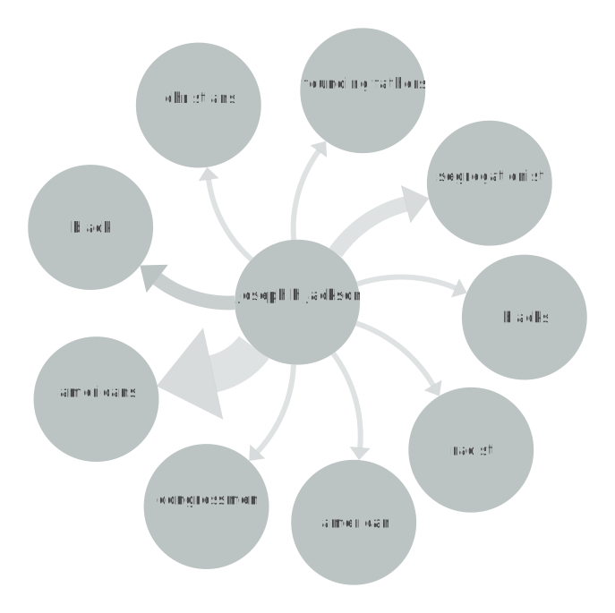

JOSEPH JACKSON
"THE VOTE IS THE ONLY EFFECTIVE WEAPON IN THE CIVIL RIGHTS STRUGGLE"
In "The Vote is the Only Effective Weapon in the Civil Rights Struggle," Joseph Jackson argued that voting was the key to achieving meaningful change in society, and that Black people needed to use their voting power to elect officials who would work towards ending discrimination and segregation. He stressed the importance of organizing and mobilizing communities to register to vote and participate in the political process. Jackson's speech was significant because it emphasized the importance of voting as a means of achieving change, at a time when many Black people were being disenfranchised and denied their right to vote. His words continue to inspire and motivate people today, as the fight for voting rights and political power remains a crucial part of the struggle for racial justice and equality.
NETWORK GRAPH
EXPLANATION
INSERT INFO ABOUT GRAPH